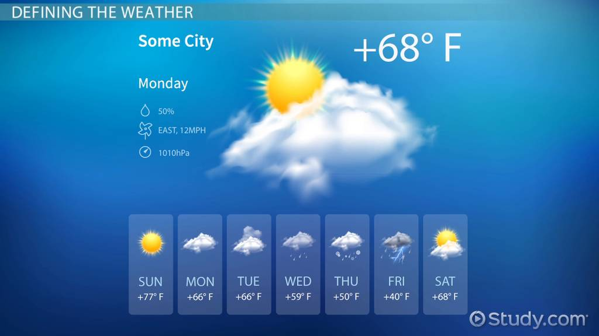
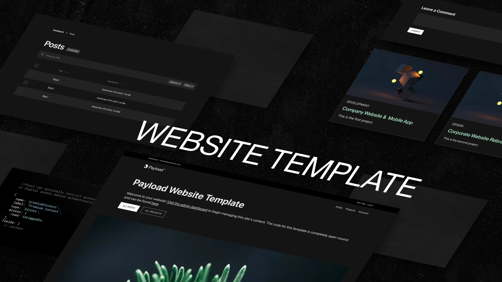
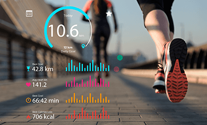
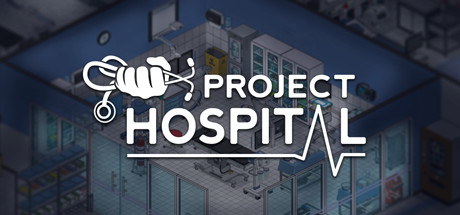

Online Bookstore
A complete e-commerce platform developed using PHP and MySQL for managing book sales.

Portfolio Website
A personal portfolio to showcase projects, resume, and contact details using HTML, CSS and JS.

Weather App
A weather forecasting app using an open weather API with real-time data and location input.

Blog CMS
A content management system for blogging with admin dashboard, post editor and comment system.

Wellness-tracker
A digital tool designed to monitor and analyze health metrics, lifestyle habits, and overall well-being to promote better self-care and personal wellness.

GuardianHealth
A comprehensive software solution designed to streamline administrative, clinical, and financial operations in healthcare facilities, ensuring efficient patient care and resource management